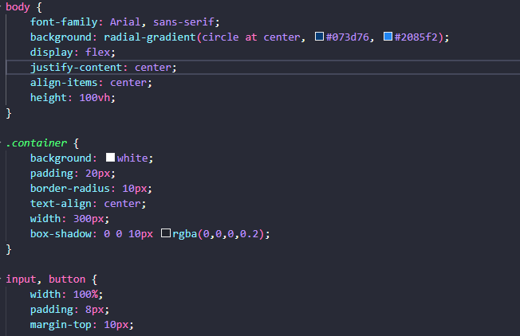
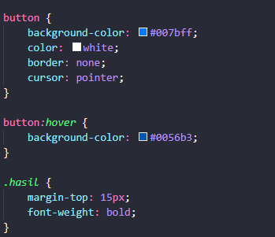
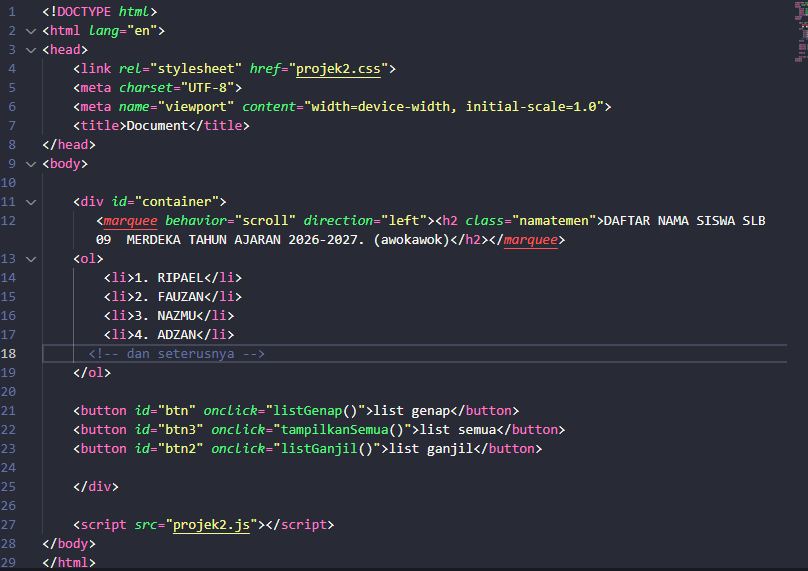
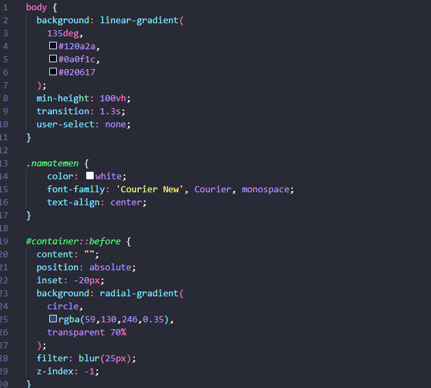
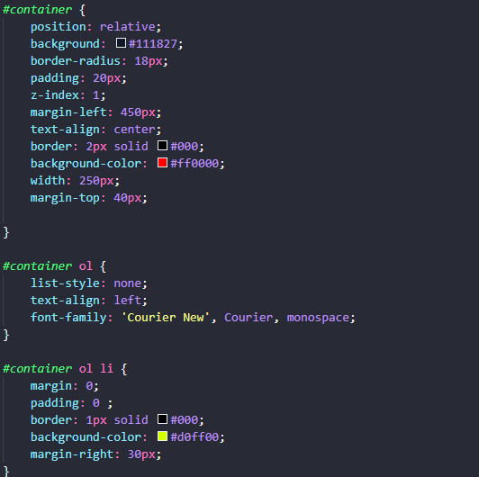
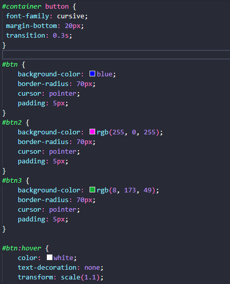
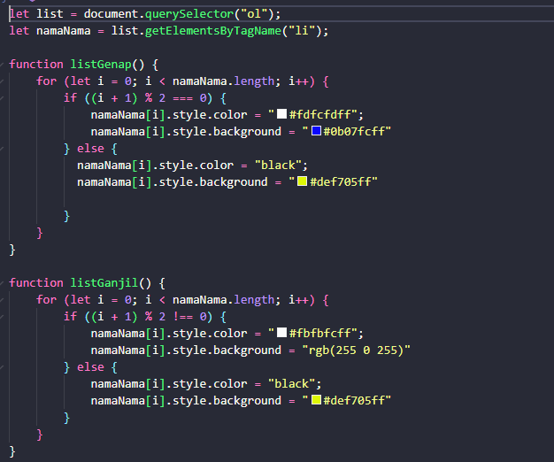
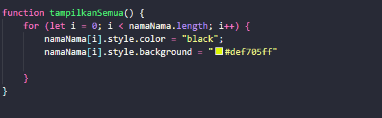

Welcome BamzArtikel

Website ini berisi artikel tentang tugas mini project saya di sekolah
Project 1: Konversi Suhu
Fahrenheit ke Celsius
Projek ini adalah aplikasi perhitungan sederhana yang menggunakan formula matematika dasar untuk mengubah skala suhu. Logika JavaScript: Mengambil nilai input dari pengguna, lalu memprosesnya menggunakan rumus: (f - 32) * 5 / 9
Fitur Utama: Penggunaan toFixed(2) untuk memastikan hasil desimal tidak terlalu panjang (hanya 2 angka di belakang koma), sehingga tampilan tetap rapi.
dengan source kode sebagai berikut ;
index.html ;

style.css ;
 script.js

Project2 : Manipulasi Daftar Nama (Ganjil & Genap)
- 1. RIPAEL
- 2. FAUZAN
- 3. NAZMU
- 4. ADZAN
- 5. MARCEL
- 6. ARIF
- 7. TORIQ
- 8. DEDY
- 9. SADAM
- 10. SATRIA
- 11. RAYAN
- 12. RAYHAN
- 13. ADILAH
- 14. DEWA
- 15. RAMBU
- 16. NAUVAL
- 17. AJI
Projek ini mendemonstrasikan bagaimana JavaScript dapat memanipulasi elemen HTML secara dinamis berdasarkan urutan atau indeks tertentu.
Logika JavaScript: Menggunakan perulangan (for atau forEach) untuk mengecek indeks setiap nama. Program menggunakan operator Modulo (%) untuk menentukan apakah sebuah baris termasuk nomor ganjil atau genap.
Fitur Utama: Perubahan gaya visual (DOM Manipulation) secara instan tanpa perlu memuat ulang halaman. Tombol "List Semua" berfungsi untuk mereset tampilan ke kondisi awal.
Source Code Projek 2 :
index.html;
style.css;
  script.js;
 projek3 : Jam Digital berubah border stiap detik
00:00:00
Projek ini menampilkan jam digital yang diperbarui setiap detik, dengan efek border yang berubah warna secara dinamis.
Logika JavaScript: Menggunakan fungsi setInterval untuk memperbarui waktu setiap detik. Menggunakan objek Date untuk mendapatkan waktu saat ini dan memformatnya menjadi string jam:menit:detik.
Fitur Utama: Efek border yang berubah warna setiap detik menambahkan elemen visual yang menarik pada jam digital.